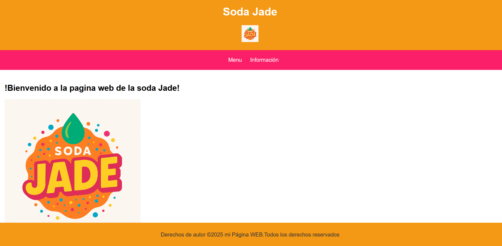
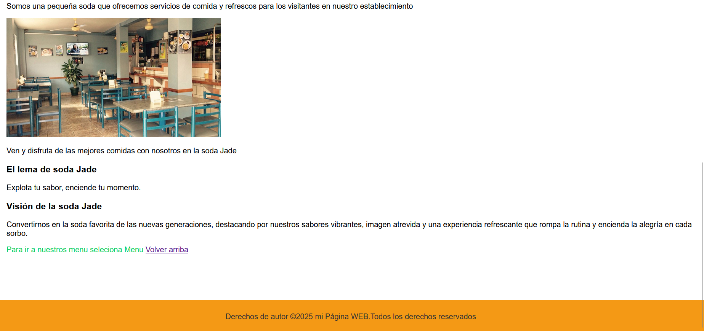
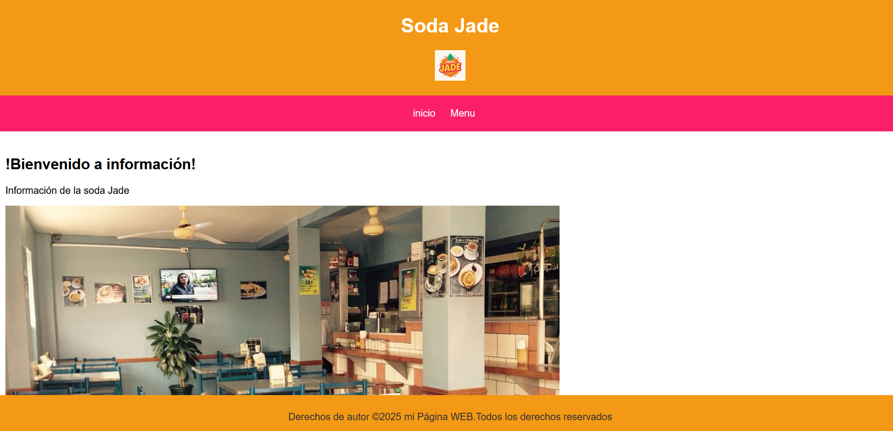
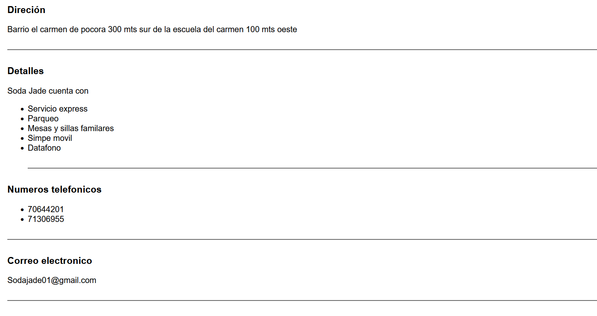
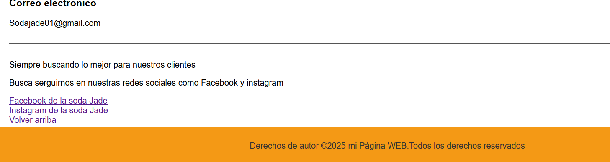
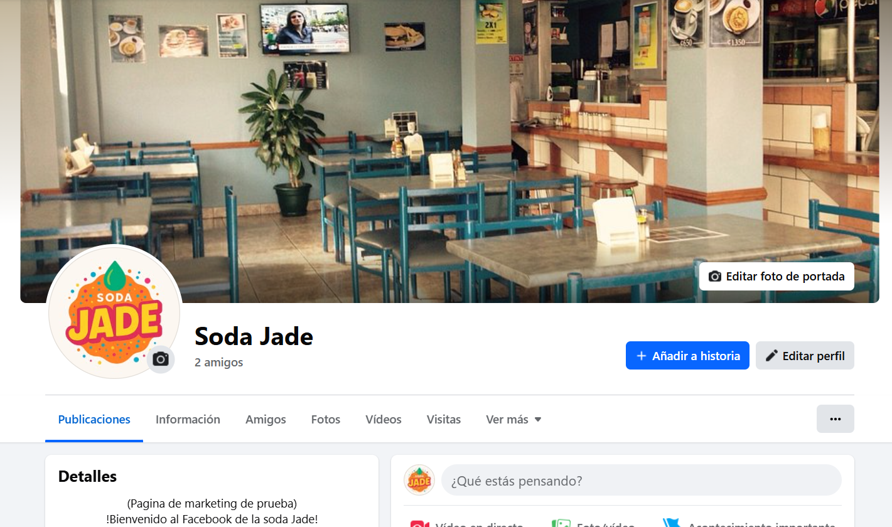
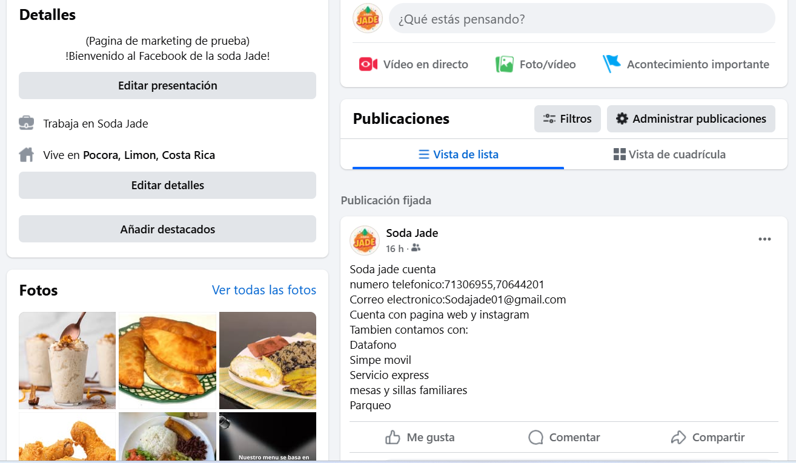
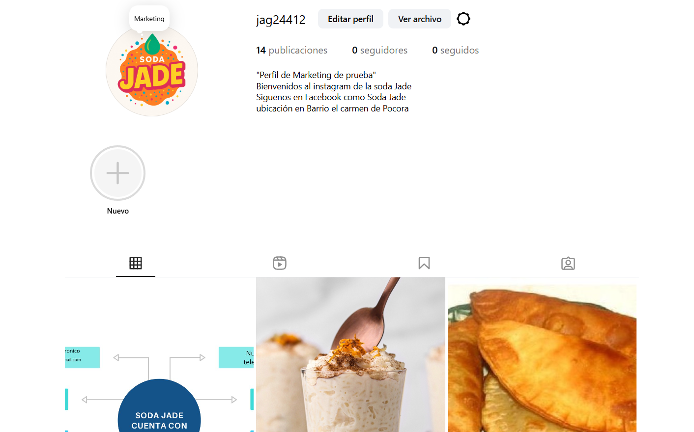
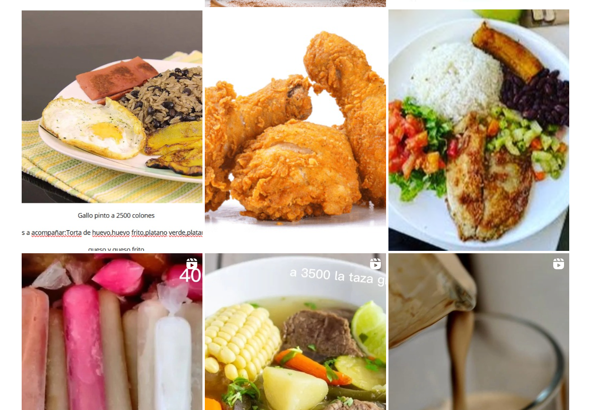
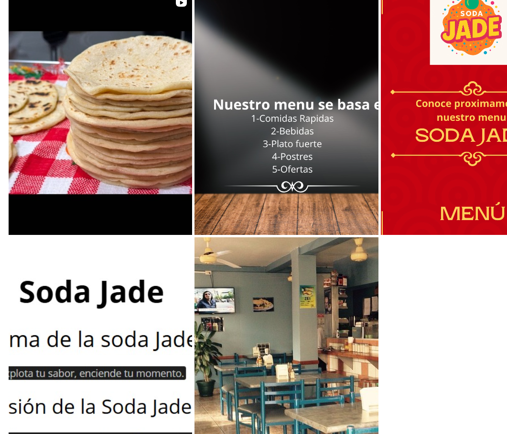

Objetivo general: Brindar soluciones de marketing efectivas, accesibles y personalizadas a pequeños emprendimientos y negocios locales, con el fin de aumentar su visibilidad, posicionamiento de marca y competitividad en el mercado.
JAG MARKETING es un emprendimiento dedicado a ofrecer servicios de marketing digital personalizados para pequeños emprendimientos y negocios locales. Nuestro objetivo es ayudar a estos negocios a dar a conocer sus productos y servicios al público y a la competencia, permitiéndoles competir en igualdad de condiciones en un mercado cada vez más digitalizado.
JAG MARKETING ofrecerá una variedad de servicios de marketing digital, que incluyen:
JAG MARKETING estará dirigida principalmente a pequeños emprendimientos y negocios locales, tales como:
Nuestro enfoque estará en aquellos negocios con presupuestos limitados para marketing, pero con grandes ganas de crecer y expandir su presencia.
Aunque JAG MARKETING ofrecerá sus servicios a cualquier negocio que necesite marketing digital, nos enfocaremos especialmente en negocios locales que operan en ciudades pequeñas y medianas. Nos dirigiremos principalmente a emprendedores que no tienen experiencia en marketing y que necesitan un enfoque práctico y asequible para crecer.
JAG MARKETING satisface la necesidad de visibilidad y crecimiento de los pequeños emprendimientos. Muchas pequeñas empresas carecen de los recursos, conocimientos y herramientas necesarias para crear una estrategia de marketing efectiva.
La principal problemática que JAG MARKETING resolverá es la falta de acceso a estrategias de marketing de calidad para los pequeños emprendimientos. Estos negocios a menudo enfrentan los siguientes problemas
JAG MARKETING ofrece una solución integral que aborda todos estos problemas, permitiendo que los pequeños negocios puedan expandir su presencia digital, atraer más clientes y competir de manera efectiva.
Mostraremos unas imagenes de una soda que se intereso en los 3 servicios que ofrecemos agradecemos a la soda JADE por permitir sus derechos de autor
Nuestras paginas web estan conformadas por inicio,acerca de y Contacto
inicio de la pagina web de la soda JADE
 En el inicio damos la Bienvenida y el logo del negocio o fotos y un poco de información del negocio
Este es el video del menu de la Soda JADE fue puestio en la zona del acerca de
ahora mostraremos la zona de contacto/información
  En la zona de contacto ponemos toda la información,direción,correo electronico,numero de telefono etc
Esto fue todo en la pagina web de la soda JADE
Volver arribaVamos a mostrar el ejemplo de facebook de la soda JADE
 Esa fue toda la sesión del facebook donde mostramos los menus por medio de videos y promociones en publicaciones
A continuación mostraremos el Instagram de la soda JAde
  Esto fue todo del instagram de la Soda JADE
Volver arribaYa culminamos con los ejemplos de los tres servicios que ofrecemos
Si esta interesado en nuestros servicios selecciona contacto